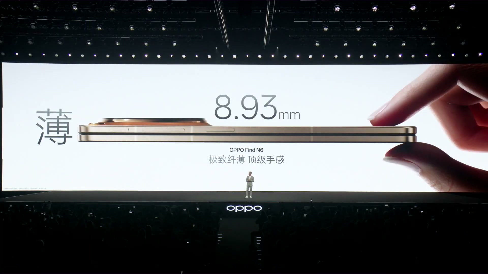
| 제품명 | OPPO Find N6 |
|---|---|
| 폼팩터 | 인폴드(내접) 폴더블 |
| 소재 | 탄소섬유 직조(碳纤维, 카본 파이버) 후면, 티타늄 합금 힌지 |
| 배색 | 원티탄(元钛) / 딥블랙(深黑) / 금층(金层, 실제 금 도금) |
| 디스플레이 | 내부: 업계 최대 크기, 초협 베젤, 정표 인증 호안 등급 외부: 동일 사양, 1니트 초저밝기 지원 |
| 접힌 자국 | 천궁(天穹) 파트너십 기반 — 기억 유리 + 티타늄 합금 힌지 → 0에 근접 독일 라인 TUV 60만회 접힘 평정 테스트 통과 실사용 10만회 접힘 후에도 평평 유지 시연 |
| 배터리/충전 | 80W 유선 플래시 충전 + 50W 무선 충전 (2,500만대 이상 차량에 50W 무선 충전 프로토콜 탑재) |
| 네트워크 | 66개 대역, 230개국 이상 지원 (폴더블 중 최다) |
| OS | ColorOS 16 |
| 부속 액세서리 | AI 손글씨 펜 (549위안), 접이식 블루투스 키보드 (549위안), 50W 자석 충전기 (349위안) |
| 가격 | 9,999위안~ (512GB +1,000위안으로 1TB 업그레이드 가능) |
| 출시일 | 2026년 3월 22일 글로벌 동시 출시 |
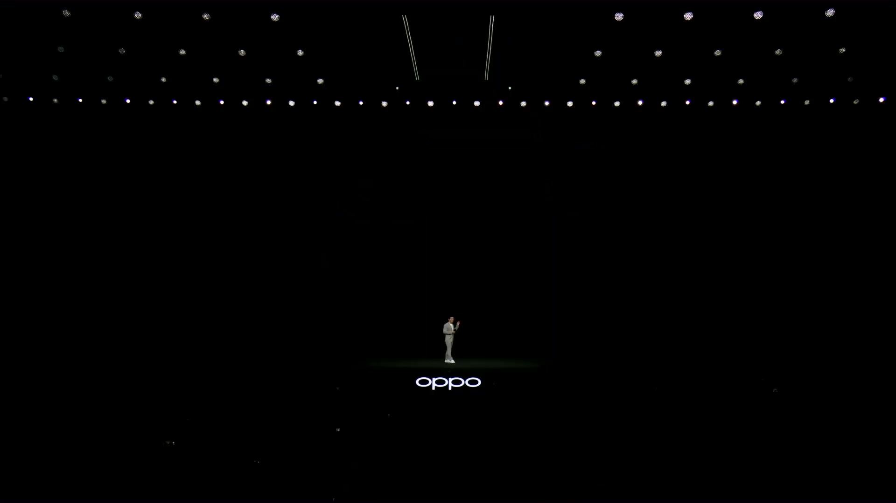
발표회에서 카메라 섹션 도입부에 OPPO Find N6를 "여행 촬영의 최적 파트너(出游旅拍 最佳搭档), 글로벌 출장의 최적 파트너(全球差旅 最佳搭档)"로 포지셔닝했다.
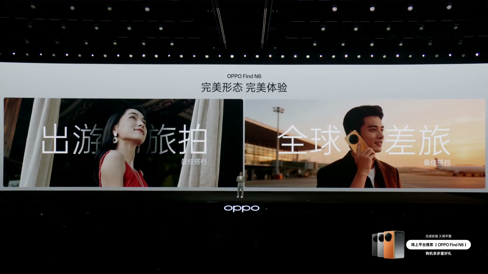
OPPO Find N6의 카메라 시스템은 "핫셀블라드 질감 영상, 여행 촬영 최적 파트너(哈苏质感影像 旅拍最佳搭档)"라는 슬로건 아래 4대 핵심 축으로 구성된다:
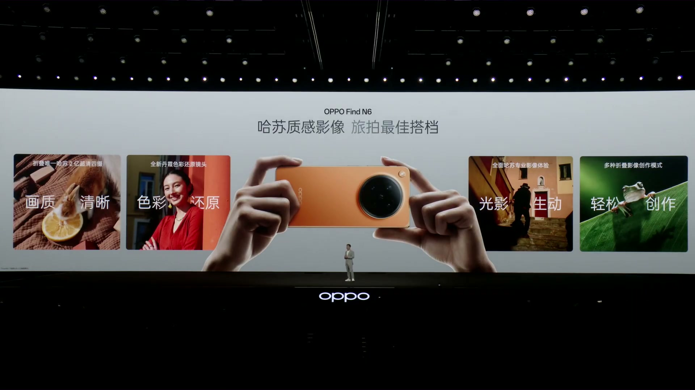
발표회에서 토끼 사진을 예시로 보여주며, 2억 화소 사진의 극히 작은 일부분만 크롭해도 선명한 털 디테일과 생생한 색감을 유지한다고 강조했다. "폴더블 카메라도 이렇게 선명하고 진실된 색상 재현이 가능하다(折叠影像也能如此清晰和真实还原)"는 메시지를 전달했다.
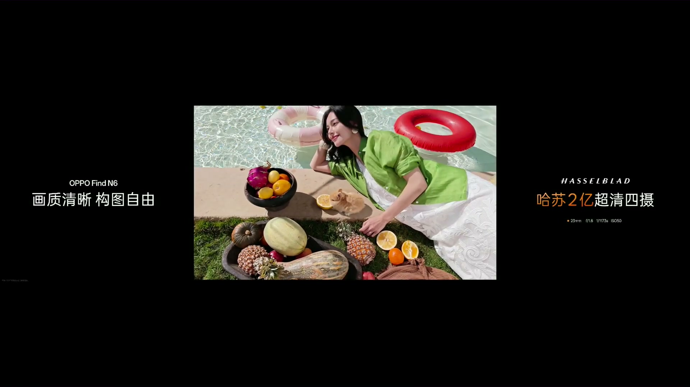
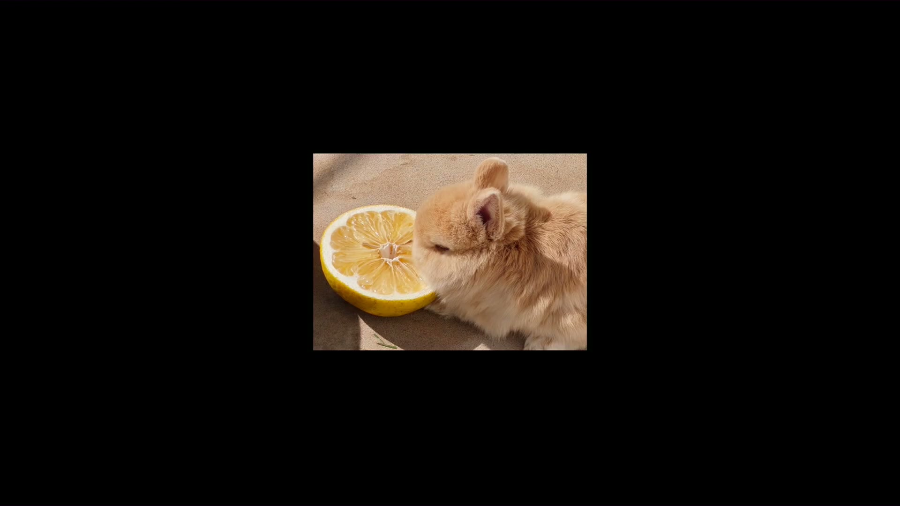
Find N6는 망원 매크로(长焦微距)를 지원하여 일상의 미시적 관점에서 흥미로운 순간을 쉽게 기록할 수 있다. 발표회에서 "미시 세계를 가볍게 창작(微观视界 轻松创作)"이라고 소개했다. 70mm f/2.7 렌즈로 촬영한 개구리 매크로 샘플이 시연되었다.
"OPPO는 인물 촬영을 잘 하는 유전자를 가지고 있다(OPPO拍人好的基因)"는 표현과 함께, Find N6에서도 이 전통을 완벽히 계승했다고 강조. 원키로 디테일이 선명하고 빛과 그림자가 생동감 있는 인물 사진(细节清晰 光影生动的人像大片)을 촬영할 수 있다.
Find N6는 폴더블 폰 최초의 단하(丹霞) 색상 복원 렌즈를 탑재했다. "색상 복원, 풍경도 아름답고 사람도 아름답게(色彩还原 景美人美)" 촬영 가능하다. 70mm f/2.7 렌즈로 과일 시장의 생생한 색감을 시연하며, 프로 수준의 색재현을 폴더블에 처음 적용한 것을 강조했다.
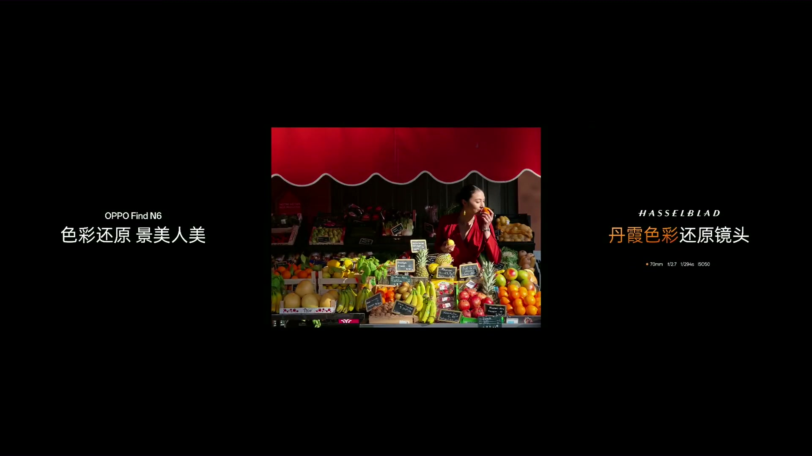
전문적인 영상 촬영을 원하는 사용자를 위해 완전한 핫셀블라드 창작 기능을 탑재했다. 대사 모드(大师模式)에서는 "빛과 그림자가 생동, 핫셀블라드 질감(光影生动 哈苏质感)"의 프로 수준 작품을 촬영할 수 있다.
핫셀블라드의 클래식 XPAN 카메라를 디지털로 재현한 모드. 폴더블 폰의 넓은 화면을 활용하여 시네마틱 파노라마 비율(65:24)로 촬영할 수 있다. "셔터를 누를 때마다 작품감이 있다(按下快门每一拍都有作品感)"고 표현했다.
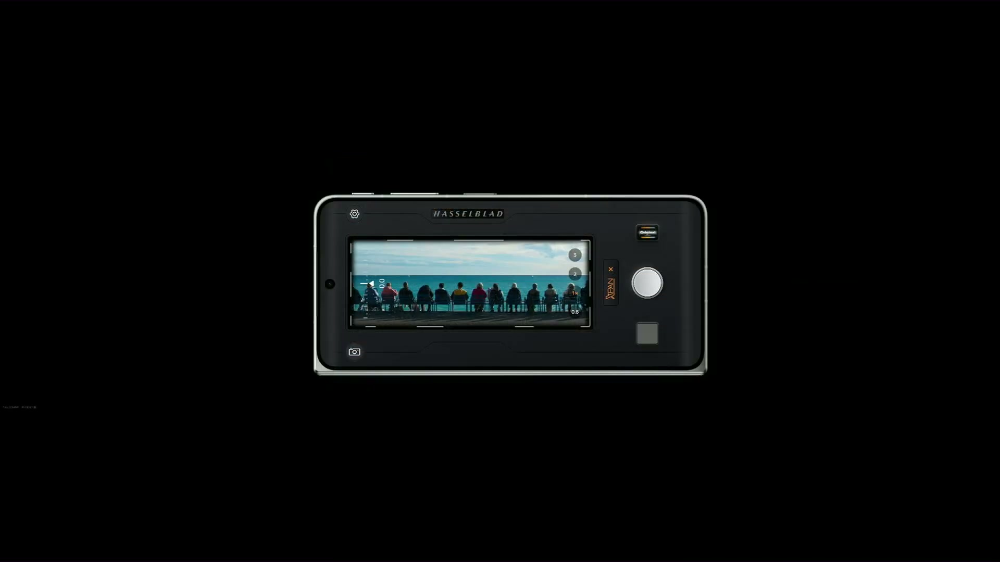
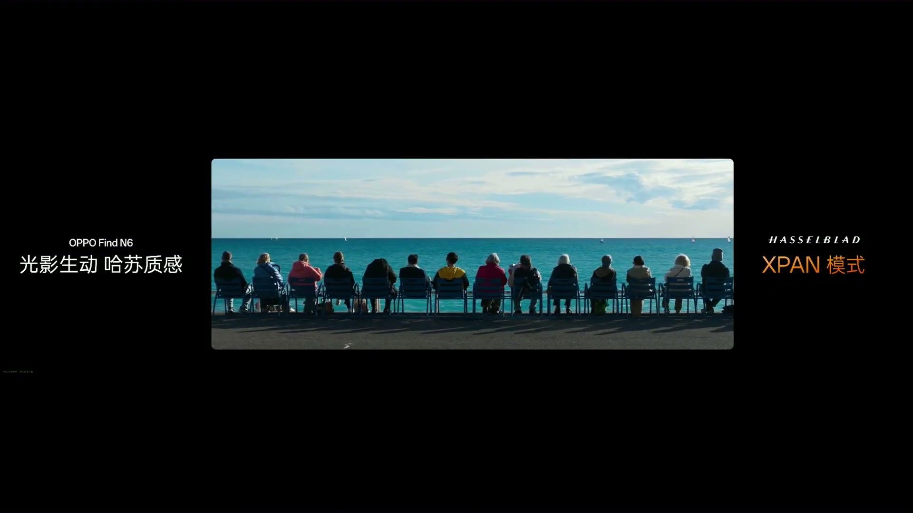
OPPO Find N6의 핫셀블라드 질감 영상은 기능이든 효과든 모두 여행 사진/영상 촬영의 최고의 파트너라고 마무리했다.
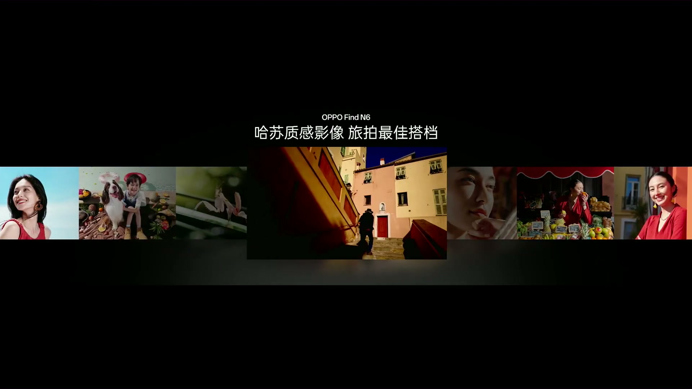
발표회 종반부에서 Find N6의 핵심 특장점을 요약하며 "플래그십 카메라, 플래그십 배터리, 플래그십 네트워크"를 언급. 카메라는 직판형 플래그십에 뒤지지 않는 성능을 폴더블에 담았다는 것이 핵심 메시지.
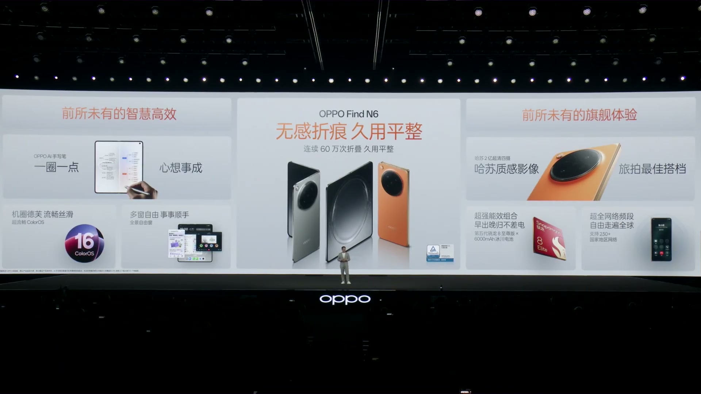
발표회 마무리 영상에서 Find N6의 카메라 모듈을 클로즈업으로 보여주며 "핫셀블라드 2억 초청 4카메라"를 반복 강조. 렌즈에 "15-70mm" 초점거리 범위와 핫셀블라드 H 로고가 새겨져 있으며, 실제 사용 장면도 함께 시연되었다.
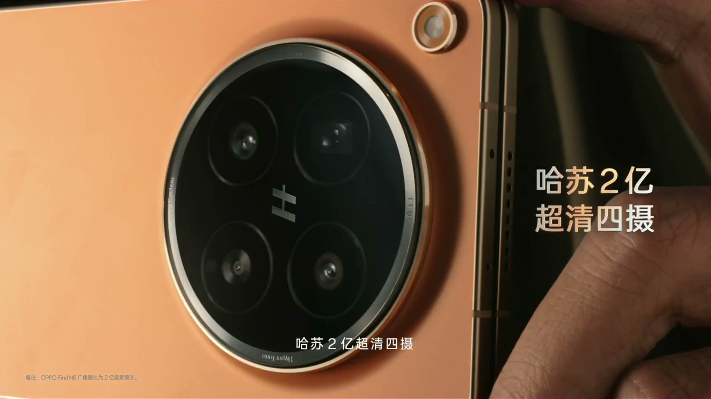
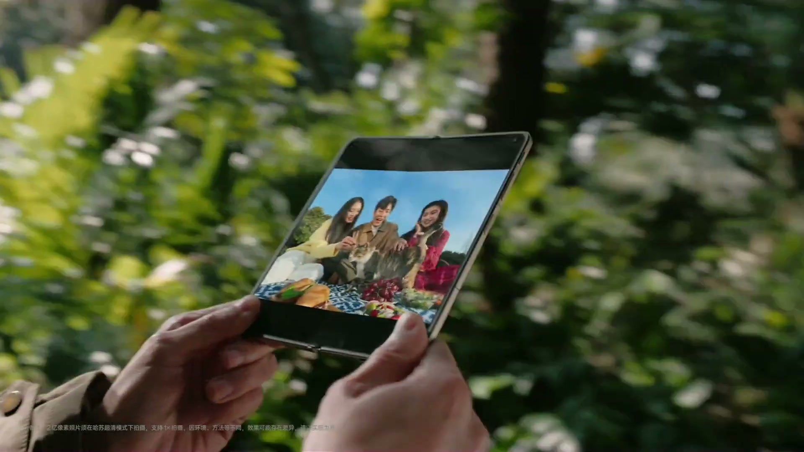
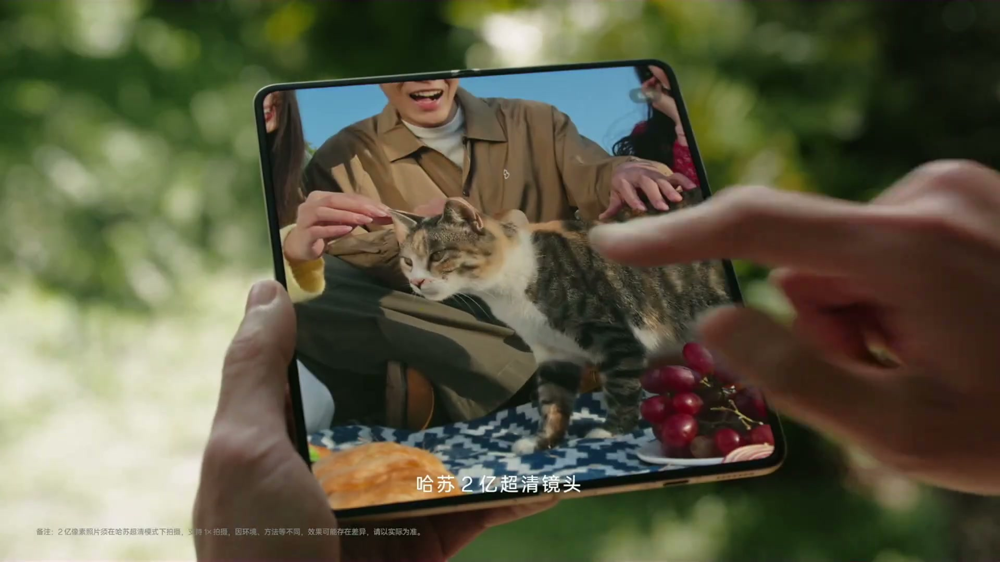
이번 발표회의 가장 큰 하이라이트. OPPO는 글로벌 최고 수준의 부품·소재 기업들과 '천궁(天穹) 파트너십'을 결성하여 접힌 자국 문제를 해결하는 두 가지 핵심 기술을 개발했다:
실제 시연으로, 유명 유튜버들이 릴레이 형식으로 10만회 이상 접은 Find N6를 발표회장에서 펼쳤을 때 여전히 평평함을 확인.
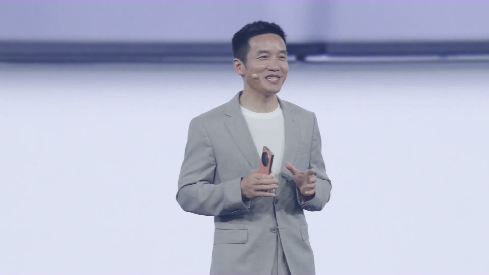
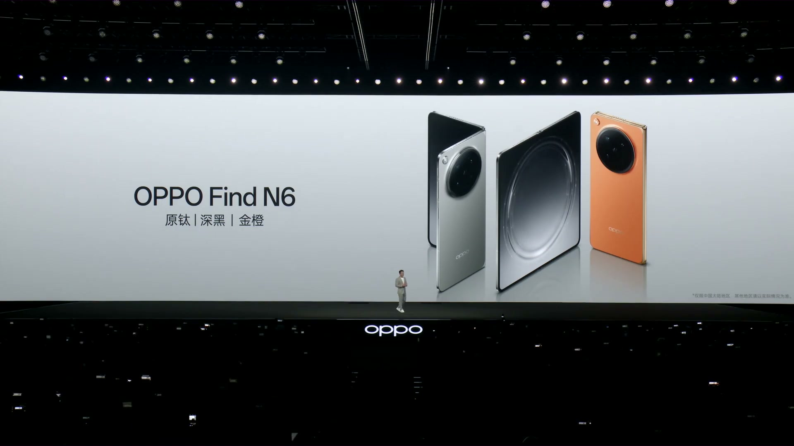
| 제품 | 가격 | 비고 |
|---|---|---|
| Find N6 | 9,999위안~ | 512GB → 1TB +1,000위안 |
| Watch X3 | 2,209위안~ | 국가보조금 적용 후 |
| AI 손글씨 펜 세트 | 549위안 | 첫 판매 시 50위안 할인 |
| 접이식 키보드 | 549위안 | 첫 판매 시 50위안 할인 |
| 50W 자석 충전기 | 349위안 |
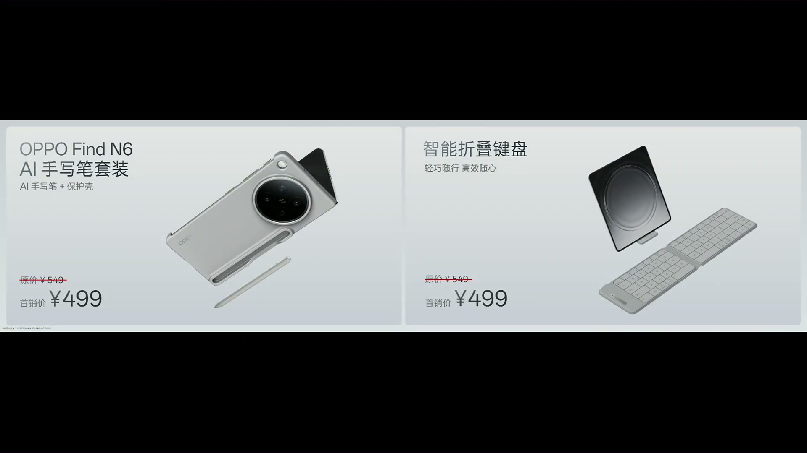